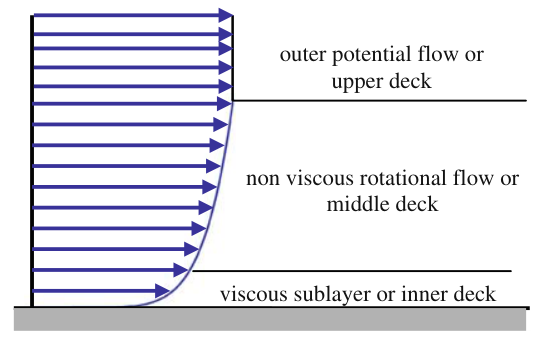
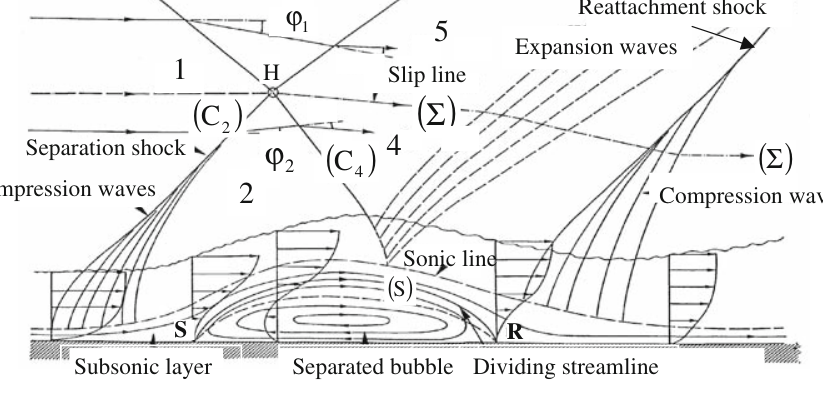
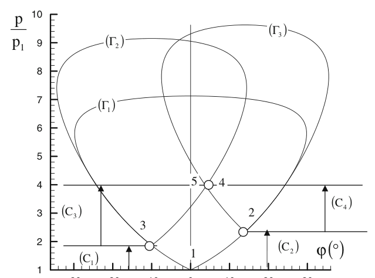
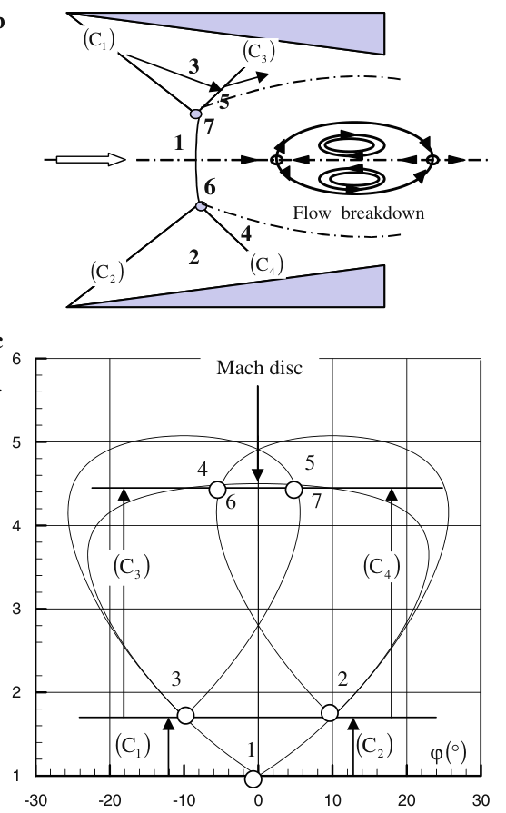

01中文摘要
本文从物理角度综述激波/边界层干扰（SWBLI）的基本机制，重点讨论入射-反射激波、压缩拐角、正激波和压力跳跃四类典型干扰，以及层流与湍流边界层中的分离、再附和激波结构。文章梳理边界层的三层结构、自由干扰理论、分离激波与再附激波的形成，分析激波/激波干扰（含 Edney I/II 型）和熵产生，并讨论干扰区的非定常性、特征频率与 Strouhal 数缩放。作者强调，尽管实验与计算已积累大量数据，强干扰下的峰值传热、压力脉动和三维效应仍缺乏统一、可靠的预测框架。
02阅读说明
综述（review article），16页，Shock Waves (2009) 19:453–468，DOI 10.1007/s00193-009-0220-z。全文完整，图注可读，含18张抓取图件。文章不报告新实验或新数值，定量数据多引自他人；公式较少，以物理图像、激波极性图和标度分析为主；未给出系统检索范围与纳入标准。 文章类型：期刊、综述
03一句话核心与三句话摘要
综述梳理SWBLI的多层结构与分离拓扑，指出自由干扰控制初始压力上升，并给出低频非定常的Strouhal标度。
- SWBLI在跨声速、超声速与高超声速流动中普遍存在，激波诱导分离和低频非定常会显著损害飞行器与发动机性能。 AI概括
- 文章以二维平均定常流为主线，综合三层/triple-deck结构、自由干扰、激波极性图、Edney Type I/II与Mach反射，并评述分离泡非定常的来源与Strouhal标度。 AI概括
- 核心结论是分离初始压力上升与上游影响由自由干扰控制、与下游激波强度基本无关；非定常频率比来流能量涡低约两个量级，SL≈0.03–0.04，混合层卷吸模型给出SL=(Mc)g(r,s)L/h。 AI概括
04核心内容清单
| 要点 | 类型 | 重要性 | 原文依据 | 属性 |
|---|---|---|---|---|
| SWBLI的四种基本二维形式：入射-反射激波、斜坡激波、正激波、压力突跳；黏性响应主要区别在有无分离。 | 分类框架 | A | p.454–455；Fig. 2 | 原文明确 |
| 边界层响应可用三层/triple-deck描述：外无粘无旋层、中无粘旋转层、内黏性底层；湍流边界层中middle deck占主导。 | 理论结构 | A | p.456；Fig. 3 | 原文明确 |
| SWBLI是“快速相互作用”：层流作用区约10δ，湍流更短；湍流雷诺应力对平均流变化存在滞后，导致均值场与湍流场解耦。 | 机制 | A | p.457 | 原文明确 |
| 无分离反射中激波穿入旋转层、逐渐弯曲并在声速线处消失；压力通过近壁亚声速层前传，壁压分布在约δ尺度展宽。 | 流动机理 | A | p.457–458；Figs. 4–6 | 原文明确 |
| MOC显示M4、−6°时壁压先跳至中间值再趋于均匀流值；M<2.5出现压力过冲，不能仅用无粘旋转效应解释，需考虑近壁亚声速层与黏性内层。 | 数值/机理 | A | p.458–459；Figs. 7–9 | 原文明确 |
| 有分离反射形成五激波图案（C1–C5）、滑移线与再附激波；属Edney Type I干扰，滑移线两侧压力相同、熵不同。 | 拓扑/激波系 | A | p.460–461；Figs. 11–13 | 原文明确 |
| 自由干扰：分离处压力上升与前段相互作用只取决于上游流动条件，与造成分离的激波强度无关。 | 核心机制 | A | p.461 | 原文明确 |
| 入射激波增强使极性图两分支不相交，出现Type II/Mach现象；过膨胀喷管分离与逆Mach反射可导致回流泡/流动崩溃。 | 激波干扰 | A | p.461–462；Figs. 14–17 | 原文明确 |
| 分离诱导非定常为低频，至少比来流能量涡低两个量级；激波近似低通滤波器；SL约0.03–0.04，散布±20%，Us<<Ue。 | 非定常 | A | p.463–465；Fig. 19 | 原文明确 |
| 两种低频标度：上游超结构（30δ、0.75Ue）给出SL=0.025L/δ，但不能解释L/δ≈5–7；混合层卷吸模型SL=(Mc)g(r,s)L/h更通用（限二维有再附）。 | 标度模型 | A | p.465–466；Fig. 20 | 原文明确 |
| 三维性、质量抽吸、无再附自由分离与非定常可靠建模仍是开放问题。 | 局限/展望 | B | p.466–467 | 原文明确 |
| 综述未说明系统检索与纳入标准，图19数据来自特定编译，代表性需读者自行判断。 | 方法局限 | C | 全文；Fig. 19 | AI概括 |
05引言：研究问题与领域缺口
研究问题：激波与边界层相遇后，边界层被突然减速并在多层结构中传播，产生逆压梯度、速度剖面畸变、湍流增强与黏性耗散，强激波还会诱导分离和大幅非定常，威胁飞行器结构、进气道与喷管性能。缺口/动机：作者认为尽管研究已超过半个世纪，SWBLI的物理描述、分离预测与非定常建模仍不完整；现有文献多分散于实验、渐近理论与数值模拟，需要一篇以物理图像为主线的综合评述。目标：先回顾二维平均定常流的基本结果（四种基本干扰、三层结构、弱/强干扰、自由干扰与激波极性图），再重点评述分离流非定常的来源与标度。假设：文中未提出可检验假设；核心立场是“激波诱导分离可视为普通分离的可压缩表现，激波是附生现象（epiphenomenon）”。
06流动条件与几何构型
| 项目 | 数值/描述 | 依据 | 备注 |
|---|---|---|---|
| 入射-反射激波纹影 | M=1.95，湍流边界层，激波反射（Fig. 4） | p.457；Fig. 4 | Onera资料；未给Re、δ、Tw |
| 有分离入射-反射激波纹影 | M=2，激波诱导分离（Fig. 10） | p.460；Fig. 10 | 未给Re、δ、Tw |
| 激波极性图示例 | M=2.5，分离激波偏转约14°，入射激波偏转−10°（Fig. 13/15） | p.461–462；Figs. 13, 15 | Fig. 13图注写“Upstream Mach number 2”，正文写2.5，二者不一致 |
| 旋转层特征线计算 | 上游M=4，主偏转−6°，Coles湍流速度剖面，切除M<1.8区域，忽略黏性底层 | p.458；Figs. 7–9 | 无粘旋转流假设；切除距离为经验选择 |
| 过膨胀喷管Type I | M=2，激波诱导偏转−10°与+10° | p.462；Fig. 16a–b | 二维喷管 |
| 过膨胀喷管Type II | M=1.8，激波诱导偏转−12°与+12° | p.462；Fig. 16c–d | 出现Mach盘（轴对称则为Mach disc） |
| 逆Mach反射极性示例 | M1=2，φ1=10°，φ2=−10° | p.464；Fig. 17c | 产生回流泡/流动崩溃 |
| 工程构型示例 | 跨声速翼型、超声速进气道、高超声速飞行器、欠膨胀喷管后体 | p.454–455；Fig. 1 | 仅示意，未给具体Mach/Re |
| 圆柱-平板干扰 | Dolling & Smith实验；主导频率随圆柱直径成反比 | p.465 | 具体Mach、Re、直径文中未提及 |
| 压缩斜坡 | Thomas et al.数据；Strouhal数略高于其他干扰 | p.465；Fig. 19 | 具体工况文中未提及 |
| 雷诺数/壁温/边界层厚度 | 综述未系统列出各实验的Re、Tw、δ数值 | 全文 | 无法据此复现具体工况 |
| 来流湍流度/噪声 | 文中未提及 | 全文 | — |
07核心现象与关键参数
| 参数 | 定义 | 数值 | 关系/说明 | 依据 |
|---|---|---|---|---|
| L | 相互作用长度（interaction length） | 随工况变化；反射流L/δ约5–7 | 用于Strouhal数SL=fL/Ue | List of symbols, p.453；p.465 |
| h | 分离泡高度 | 随工况变化；L/h约5–6 | 卷吸模型SL=(Mc)g(r,s)L/h | List of symbols, p.453；p.466 |
| δ | 边界层厚度 | 各实验不同；未列表 | 层流作用区约10δ；超结构尺度30δ | p.457, p.465 |
| Mc | 对流Mach数（convective Mach number） | 大多数研究的大结构Mc接近1 | 卷吸模型SL=(Mc)g(r,s)L/h | List of symbols, p.453；p.466 |
| SL | Strouhal数=fL/Ue | 0.03–0.04，散布约±20% | 表征激波非定常主频 | p.465；Fig. 19 |
| Us | 激波位移速度 | Us=Lf；因SL<<1，Us<<Ue | 激波准静态运动，强度不依赖速度 | List of symbols, p.453；p.465 |
| χ(Mc) | 混合层归一化铺展率 | Mc≈1时约0.2–0.3 | SL=(Mc)g(r,s)L/h中的主要参数 | p.466 |
| r | 密度比 | 文中未给具体值 | g(r,s)为速度/密度比的弱函数 | List of symbols, p.453；p.466 |
| s | 速度比 | 文中未给具体值 | g(r,s)为弱函数 | List of symbols, p.453；p.466 |
| pst | 停滞压力（总压） | 沿流线近似常数，向壁面降低 | 解释近壁更易分离 | List of symbols, p.453；p.459 |
| φ | 激波诱导偏转角 | 示例：分离激波约14°，入射激波−10°（M=2.5） | 激波极性图中的状态量 | p.461–462 |
08方法与数据
综述方法：叙述性文献综合，未说明数据库、检索式、纳入/排除标准或文献筛选流程。分析框架：以二维平均定常流为基线，按“边界层对外部快速压缩的响应→无分离弱干扰→有分离强干扰→非定常”展开。具体工具包括：Lighthill/Stewartson-Williams的三层（triple-deck）渐近结构；Crocco方程与Bernoulli方程用于说明分离判据；旋转特征线法（fitted shock、Coles湍流速度剖面、切除M<1.8区域、忽略黏性底层）计算激波在旋转层中的传播；激波极性图与Rankine-Hugoniot关系、Edney Type I/II分类；纹影与壁面压力分布；非定常分析采用预乘功率谱fE(f)、Strouhal数、激波位移速度与混合层卷吸时间尺度。无网格、无实验不确定度或误差分析。
| 项目 | 内容 | 依据 | 备注 |
|---|---|---|---|
| 综述类型 | 叙述性物理综述，非系统综述 | p.453–454 | 无检索式、纳入标准或文献计数 |
| 理论框架 | 三层/triple-deck：外无粘无旋、中无粘旋转、内黏性；Lighthill提出、Stewartson-Williams渐近证明 | p.456；Fig. 3 | 适用于快速相互作用时间尺度 |
| 旋转特征线法 | fitted shock、Coles湍流剖面、M<1.8区域切除、忽略黏性底层 | p.458；Figs. 7–9 | 无粘计算，用于展示激波在旋转层中的传播 |
| 激波极性分析 | Rankine-Hugoniot关系、Edney Type I/II分类、滑移线匹配p与φ | p.461–462；Figs. 13–17 | 解释五激波图案与Mach现象 |
| 实验可视化 | 纹影照片（Onera资料） | p.457, p.460；Figs. 4, 10 | 定性展示激波系与分离 |
| 壁面压力分布 | 分离时先陡升、平台、再附段二次上升 | p.460；Fig. 12 | 无具体数值表 |
| 非定常谱分析 | 预乘功率谱fE(f)取峰、Strouhal数SL=fL/Ue、激波位移速度Us=Lf | p.465；Fig. 19 | 不同干扰数据编译对比 |
| 标度模型 | 上游超结构模型与分离泡混合层卷吸模型 | p.465–466；Fig. 20 | 后者限二维有再附分离 |
| 不确定度/误差 | 未给出实验或数据编译的不确定度；仅称SL散布约±20% | p.465 | 综述性质 |
09核心推导与公式
综述没有单一闭式推导，而是给出多条可复核的分析链：三层结构与Crocco关系→用Bernoulli说明分离判据→自由干扰→分离反射的激波极性图构造→非定常Strouhal标度（超结构估计与混合层卷吸模型）。以下严格按原文顺序整理，不补写原文没有的步骤。
关键假设
- 基本描述采用二维平均定常流
- 相互作用时间尺度远短于黏性改变边界层熵的时间尺度，故外/中层可按无粘处理
- 边界层内静压跨层近似常数，总温近似常数（绝热壁尤甚）
- MOC计算为无粘旋转流、激波拟合、Coles湍流剖面，切除M<1.8区域并忽略黏性底层
- 激波极性分析基于均匀上游、完全气体与Rankine-Hugoniot关系
- 非定常标度限二维、有再附的分离流；混合层铺展率类比 canonical mixing layer
推导过程
把壁面流动分为外无粘无旋层、中无粘旋转层、内黏性底层。中层是熵/涡量层，总压沿法向变化而总温近似不变，其旋转性与熵梯度由Crocco方程联系；静压跨边界层近似常数。
沿每条流线写Bernoulli方程。总压越靠近壁面越低，因此同样的压力上升会在近壁造成更大减速；当逆压梯度足够强时近壁速度停滞或反向，形成分离区。
分离产生的压缩波汇聚为分离激波；分离处压力上升和相互作用前段的范围只由当地上游边界层/外流条件决定，与造成分离的激波强度无关。因此不同干扰的初始压力分布在适当尺度下应重合。
上游状态1经入射激波C1到状态3，经分离激波C2到状态2；C1在H点折射为C4，C2折射为C3。状态4与5必须压力相同、方向相同，故取极性(Γ3)与(Γ2)的交点；两套激波路径熵增不同，因而从H发出滑移线Σ。若两极性不相交，则出现Mach现象/Type II干扰。
定义Strouhal数SL=fL/Ue与激波位移速度Us=Lf。若上游存在长度30δ、对流速度0.75Ue的超结构，则f=0.75Ue/(30δ)，从而SL=0.025L/δ。该值只在L/δ约1时与观测的0.03–0.04相容，不能解释L/δ≈5–7的反射流。
把分离泡内质量被边缘混合层卷吸的时间尺度取为泡内质量/卷吸率，其倒数给出频率尺度；假定混合层铺展率随密度比、速度比与对流Mach数的依赖与典型混合层相同，得到SL=(Mc)g(r,s)L/h。g(r,s)是弱函数，故SL主要由L/h与Mc决定。
适用边界：所有分析限于二维平均定常流或二维有再附分离；三层结构对湍流边界层主要是定性/尺度分析；MOC切除M<1.8与忽略黏性底层为经验处理；激波极性分析假设完全气体与均匀上游；卷吸模型不含三维、质量抽吸与无再附自由分离；综述未给出各实验的Re、Tw、δ，无法定量复现。
10结果：主要发现与关键证据
（1）给出四种基本干扰：入射-反射激波、斜坡激波、正激波、压力突跳（喷管出口自适应激波），并指出黏性响应在有无分离上的差异大于干扰类型差异（p.454–455）。（2）边界层可视为外无粘无旋层、中无粘旋转层、内黏性底层；湍流边界层中 middle deck 占大部分，快速相互作用在层流约10δ、湍流更短（p.456–457）。（3）无分离反射：激波穿入旋转层后逐渐弯曲、强度减弱并在声速线处消失；压力上升通过近壁亚声速层前传，使壁压分布在约δ尺度上展宽（p.457–458）；MOC显示M4、−6°时壁压先跳到中间值再趋均匀流值；M<2.5出现无粘旋转效应不能解释的压力过冲（p.458–459）。（4）有分离反射：分离泡、分界流线S-R、分离激波与再附激波构成五激波图案；Type I Edney干扰、滑移线、熵增低于纯无粘情况；自由干扰使分离处压力上升与相互作用前段只取决于上游条件，与激波强度无关（p.460–461）。（5）入射激波增强到极性图两分支不相交时出现Type II/Mach现象，危害高超声速进气道总压；过膨胀喷管内分离可呈Type I或Type II；特定条件下出现逆Mach反射与回流泡（p.462）。（6）非定常为低频“呼吸”，至少比来流能量涡低两个量级；激波类似低通滤波器；不同干扰的SL集中在0.03–0.04，散布±20%；SL<<1意味着Us<<Ue，激波准静态运动（p.463–465）。（7）超结构（30δ、0.75Ue）可给出SL=0.025L/δ，但不能解释L/δ≈5–7的反射流；混合层卷吸模型给出SL=(Mc)g(r,s)L/h，可统一二维有再附分离（p.465–466）。
| 发现 | 证据 | 证据类型 | 强度 | 位置 | 属性 |
|---|---|---|---|---|---|
| 二维SWBLI可归纳为四种基本干扰：入射-反射激波、斜坡激波、正激波、压力突跳；黏性响应在有无分离上的差异大于干扰类型差异。 | 四种构型示意与讨论；除喷管出口情况外，边界层响应基本一致。 | 分类/综述 | 强 | p.454–455；Fig. 2 | 原文明确 |
| 边界层响应具有三层/triple-deck结构；湍流边界层中middle deck占大部分，故可用无粘旋转流描述大部分相互作用，但近壁必须保留黏性。 | 三层结构图与Lighthill/Stewartson-Williams论证。 | 理论 | 强 | p.456；Fig. 3 | 原文明确 |
| 无分离反射中激波穿入旋转层、弯曲并在声速线处消失；上游影响通过近壁亚声速层传播，壁压分布在约δ尺度展宽。 | 纹影、壁压分布示意与MOC计算。 | 实验/计算 | 强 | p.457–458；Figs. 4–6 | 原文明确 |
| MOC显示M4、−6°时壁压先跳至中间值后趋均匀流值；M<2.5出现压力过冲，无粘旋转效应不足以解释，需考虑近壁亚声速层与黏性内层。 | 特征线网格、壁压分布与静压等值线。 | 数值 | 强 | p.458–459；Figs. 7–9 | 原文明确 |
| 有分离反射形成五激波图案、滑移线与再附激波，属Edney Type I；分离路径熵增低于无分离/无粘情况。 | 流动草图、极性图与熵比较论证。 | 理论/拓扑 | 强 | p.460–461；Figs. 11–13 | 原文明确 |
| 自由干扰成立：分离处压力上升和前段相互作用只取决于上游条件，与激波强度无关。 | 自由干扰理论[6]与实验验证的综述。 | 机制 | 强 | p.461 | 原文明确 |
| 入射激波增强可使极性图两分支不相交，产生Type II/Mach现象；过膨胀喷管分离与逆Mach反射会导致回流泡/流动崩溃。 | 极性图、喷管示意图与逆Mach反射图。 | 理论/工程 | 强 | p.461–462；Figs. 14–17 | 原文明确 |
| 分离诱导非定常为低频，至少比来流能量涡低两个量级；激波类似低通滤波器；不同干扰的SL约0.03–0.04，散布±20%，且Us<<Ue。 | Fig. 19数据编译、SL定义与Us=Lf推导。 | 数据综合/标度 | 强 | p.463–465；Fig. 19 | 原文明确 |
| 超结构模型SL=0.025L/δ不能解释L/δ≈5–7的反射流；混合层卷吸模型SL=(Mc)g(r,s)L/h更通用，但限二维有再附分离。 | 两模型推导与与实验L/δ、SL的对比。 | 标度模型 | 中 | p.465–466；Fig. 20 | 原文明确 |
| 三维性、质量抽吸、无再附自由分离与非定常可靠建模仍是开放问题。 | 结论段的明确陈述。 | 展望 | 强 | p.466–467 | 原文明确 |
11机制解释与论证链
机制链：激波对边界层施加突然逆压，近壁总压最低处首先停滞/反向→分离；分离产生的压缩波汇聚成分离激波，与外流激波相交形成五激波图案、滑移线和再附激波。分离前段的压力上升由自由干扰决定，故与下游激波强度基本无关；滑移线两侧压力相同但熵不同，分离路径的总熵增反而低于纯无粘反射，这为减阻/效率控制提供依据。非定常方面：无分离时上游湍流穿过激波被快速畸变，激波起低通滤波作用；有分离时分离泡边缘混合层的拍动与卷吸控制低频“呼吸”，其频率随混合层铺展率（随Mach数下降）而降低。上述因果链中“总压最低处首先分离”“低通滤波”为原文明确，“拍动/卷吸为主控”为原文引用的Piponniau等模型。
12讨论：结论、贡献与局限
机制：分离的初始压力上升与上游影响由自由干扰（当地边界层与外流的相互耦合）控制，因此与下游激波强度基本无关；分离后激波系在外流中形成五激波图案、滑移线与再附激波，熵增反而低于无分离/无粘情形，这一结果被用于减阻与内流效率控制。非定常来源分两支：上游湍流穿过激波被快速畸变（Ribner快畸变、低通响应），以及分离泡边缘混合层的拍动/卷吸；前者适用于无分离或下游不控制的工况，后者适用于有再附的二维分离。局限：全文以二维平均定常流为基线；三维性、质量抽吸、无再附的自由分离、湍流建模与非定常定量预测均未充分覆盖；层流与湍流的差异只作定性说明。未解决：三维SWBLI拓扑、质量抽吸影响、分离诱导非定常的普适模型与可靠预测。
作者结论
作者结论：SWBLI的结构主要是边界层对激波突然局部压缩的响应，边界层按非均匀流反应，黏性与惯性项复杂耦合；最显著的后果是压力间断向上游展宽。激波强到分离时，流动形成复杂激波/激波干扰图案，其性质取决于Mach数与激波产生方式；但分离本身仍遵守由总压升决定的普通分离规律。自由干扰解释分离初始压力上升与上游影响；分离路径熵增可低于无粘情况。非定常分高频湍流脉动与低频整体“呼吸”，后者在跨声速可由下游声反馈/全局不稳定控制，在超声速分离流中与混合层卷吸/拍动有关，频率随Mach数按混合层铺展率下降。三维性、质量抽吸与可靠建模仍是开放问题。
主要贡献
- 以统一物理框架串联SWBLI的四种基本干扰、三层结构、弱/强干扰、自由干扰与Edney激波干扰分类，适合作为领域入门与参考。
- 用旋转特征线计算直观展示激波在湍流边界层旋转层中的弯曲、消失与壁压过冲，并明确指出无粘旋转模型的适用边界。
- 系统阐述分离反射的五激波拓扑、滑移线与熵增特征，并说明其对减阻/内流效率控制的含义。
- 把分离诱导非定常归纳为上游湍流快畸变与分离泡混合层卷吸两条支路，给出SL≈0.03–0.04与SL=(Mc)g(r,s)L/h的定量标度。
局限与未解决问题
作者承认：综述以二维平均定常流为主，未充分覆盖三维SWBLI、质量抽吸、无再附自由分离；层流与湍流差异只作定性说明；非定常的可靠建模仍是开放问题。AI识别：非系统综述，无检索式/纳入标准；多数实验的Re、Tw、δ未列出，无法复现；MOC切除M<1.8与忽略黏性底层为经验选择且未做敏感性分析；Fig. 13图注M=2与正文M=2.5冲突；SL数据散布±20%，且Fig. 19来自特定编译。
13对高速流动与工程的意义
对高速流动/工程的意义：为进气道、隔离器、叶栅、喷管与再入飞行器的SWBLI分析提供物理判据——初始分离压力与上游影响可用自由干扰估计，不必先知道下游激波强度；激波干扰类型可用极性图快速判定，Type II/Mach现象会显著增加总压损失；非定常主频可用SL≈0.03–0.04或卷吸模型估算，用于气动弹性/气动声学筛查。不能回答：具体构型的三维拓扑、质量抽吸效果、湍流非定常幅值与频谱的定量预测。
14核心图件




15可引用原文素材
| 原文短句 | 可支持的观点 | 位置 | 使用建议 |
|---|---|---|---|
| “the shock being an epiphenomenon” | 激波诱导分离可视为普通分离的可压缩表现 | p.454（PDF第2页） | 概括全文物理立场的核心短语 |
| “a hierarchy reversal” | 强干扰中黏性效应从修正项变为控制解的核心 | p.461（PDF第9页） | 区分弱/强干扰的关键表述 |
| “the pressure rise at separation ... depend only on the flow properties at the interaction onset” | 自由干扰：初始压力上升与下游激波强度无关 | p.461（PDF第9页） | 自由干扰定义的核心引文 |
| “entropy production is smaller than in a non-separated interaction” | 分离路径的总熵增可低于无粘/无分离情况 | p.461（PDF第9页） | 讨论分离控制减阻时的反直觉结论 |
| “the shock waves behave rather like low-pass filters” | 激波对上游湍流脉动的频率响应 | p.464（PDF第12页） | 非定常/气动弹性分析 |
| “a Strouhal number around 0.03–0.04” | 多种SWBLI的低频非定常主频标度 | p.465（PDF第13页） | 工程估算激波呼吸频率 |
| “this implies that Us << Ue” | SL<<1时激波准静态运动，强度不依赖速度 | p.465（PDF第13页） | 解释激波运动与强度解耦 |
| “reliable modelling of shock induced separation ... is still largely an open question” | 分离与非定常的可靠预测仍未解决 | p.467（PDF第15页） | 写研究缺口/展望时引用 |
16最终核验
| 核验项 | 结论 |
|---|---|
| 仅基于全文 | 是。仅使用bundle全文与图注，未引用bundle之外的文献或数据。 |
| A 级要点有依据 | 是。A级要点均给期刊页码/PDF页码、章节或图号；公式均回查原文位置。 |
| 属性标注 | 是。three_sentence、core_points、findings均标注属性；综述无新数据之处标为AI概括。 |
| 覆盖范围 | 覆盖IMRaD四节、12项工况、11项参数、9项方法、6步分析链、10条发现、8条引文、4张图；bundle 982行已全文读完。 |
| 无编造 | 未编造页码、图号、公式或数据；未给值的Re、Tw、δ均写“文中未提及”；Fig. 13图注与正文Mach数冲突已如实列出。 |
需回原文确认
- Fig. 13图注写上游M=2，正文写M=2.5，哪个正确？
- 综述未给各实验的Re、Tw、δ与来流条件，如何判断所引结论的适用范围？
- L与h的定义/测量位置未完全说明：L是否从分离前上游影响起点到再附？h如何取？
- MOC切除M<1.8区域是经验选择，改变切除高度对壁压过冲结论有何影响？
- 分离激波约14°由Zhukoski分离判据给出，该判据在M4–6与冷壁/绝热壁下是否仍适用？
- 超结构长度30δ、对流速度0.75Ue是假设值，是否有超声速边界层直接测量支持？
- 卷吸模型SL=(Mc)g(r,s)L/h的g(r,s)具体形式与适用范围未给出，如何用于工程设计？
- 三维性、质量抽吸与无再附自由分离的影响是否有定量结论？文中仅列为开放问题。
17关联文献
依据标签、板块、构型与作者脉络自动关联，可据此追踪同一问题的前序与后续工作。
18引用格式
选择期刊风格后复制；出处保留原刊名。BibTeX 可直接用于 LaTeX。
引用格式
Délery, J. & Dussauge, J. P. 2009 Some physical aspects of shock wave/boundary layer interactions. Shock Waves 19 (6), 453–468. https://doi.org/10.1007/s00193-009-0220-z
PDF上传 PDF 并更新本页
本页缺少全文、摘要或图件时，可在浏览器本地补入 PDF。解析完全在本机完成，不上传网络；完成后会更新本页的 PDF 打开链接、原摘要、IMRaD 机器抽取、关键句与含图页面。复杂的公式语义与中文深度解读仍以原文和既有精读记录为准。